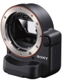

对应于NEX数码相机，能转接31款A卡口镜头，其内部的自动对焦马达能使转接的绝大部分A卡口镜头,采用了索尼独有的半透镜技术，转接A卡口镜头后可使NEX数码相机获得相位检测对焦功能.
有的人说，微单装上这个就失去了微单的意义，但是个人觉得微单这么玩也挺有趣的，对焦速度有了质的飞跃。这东西让NEX像个变形金刚
对焦快，追焦成为可能，做工优良质感很好 可以共享A口的高端镜头，补充E口高端头少的不足
边缘的焦点有时候不是那么靠谱 外观不怎样
绝无仅有，实现a系统与NEX全面一体化的第一座桥梁
使NEX相机变成了单电
1、对焦声难听； 2、外观值得改进。
绝对的创意，让nex成了半透机。而且作为附件，意外的是还能享受1年保修
1.对焦迅速 2,做工扎实
重了点
非常满意
内置相位差对焦模块，十五个对焦点里有三个十字对焦点，让nex们也具备了和单电一样的对焦速度，抓拍成为可能
贵了点